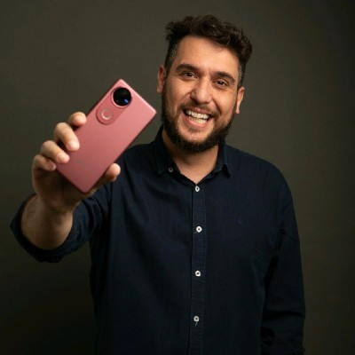
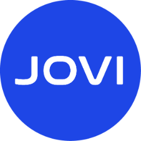
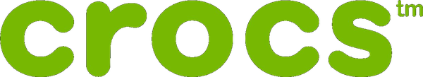
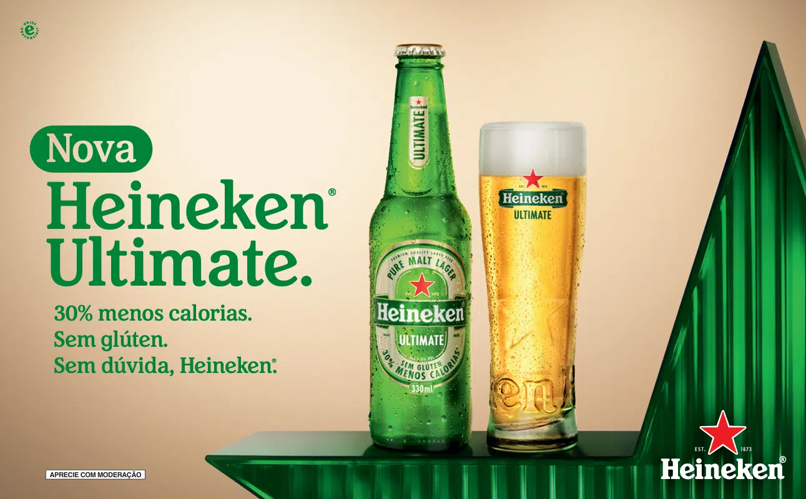
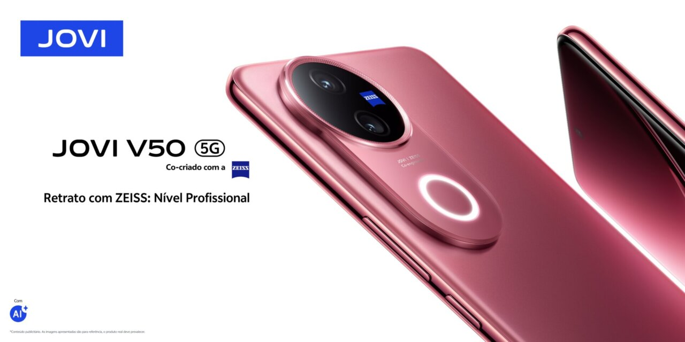
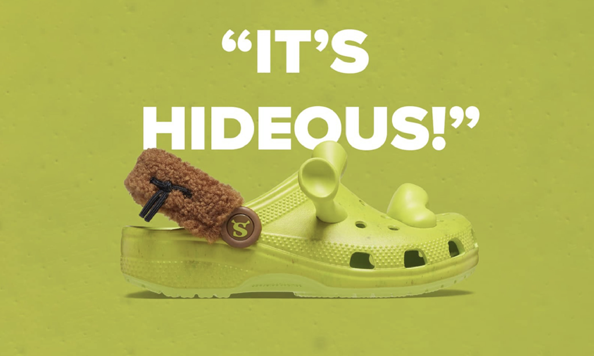

Gustavo "Guga" Carnicel
LinkedInConsumer & Market Insights Manager. Ex-NielsenIQ; relação prévia consolidada em pesquisa.
Contato diretoGancho possível: baixo teor, ocasião de consumo e inovação premium.Três aberturas para discutirmos: quem vale priorizar, qual é o gancho e como puxar o assunto.
Eu começaria por esses nomes porque parecem ter abertura, assunto e um próximo passo possível.
O critério aqui foi combinar proximidade, momento de negócio e um gancho claro para uma primeira conversa.
Consumer & Market Insights Manager. Ex-NielsenIQ; relação prévia consolidada em pesquisa.
Contato diretoGancho possível: baixo teor, ocasião de consumo e inovação premium.
Public Relations & Brand Experience Director. Marca em construção de presença no Brasil.
Contato diretoGancho possível: construção de marca e diferenciação em uma categoria cheia.
Executivo de Varejo & Expansão. Ponte natural via contato intermediário próximo.
Porta intermediadaGancho possível: expansão, força de marca e impacto em vendas.

O gancho pode ser entender melhor o que baixo teor quer dizer para a marca e para as ocasiões de consumo.

Eu puxaria a conversa pelo desafio de construir marca no Brasil, antes de tentar vender uma solução.

A ponte pode começar por expansão e varejo, conectando força de marca a crescimento de vendas.
Primeiro toque leve: abrir conversa, ouvir o momento e só depois entender se faz sentido avançar.
Reaquecer a relação construída em pesquisa e propor uma chamada curta para entender o momento da Heineken. Puxar por parceria anterior + lançamento Heineken Ultimate.
Retomar contato sem pauta fechada, conectando a chegada na equipe quali da Kantar ao momento de construção da JOVI.
Acionar a ponte com Maurício Camacho pelo tema de expansão e usar a conversa para chegar na pessoa certa de marca.